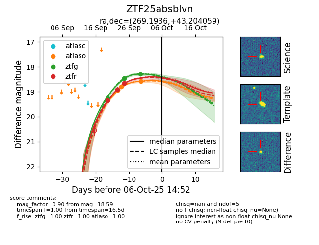
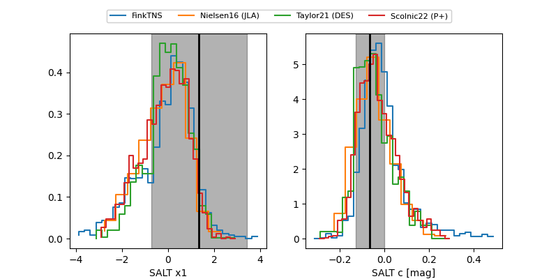

FINK: ZTF25absblvn
Lasair: ZTF25absblvn
ALeRCE: ZTF25absblvn
ZTF25absblvn (ztf,fink)
equatorial (ra, dec) = (269.1936,+43.20406)
galactic (l, b) = (69.7782,+27.73837)


last atlaso=18.59, ztfg=18.28, ztfr=18.67
3 atlaso, 3 ztfg, 3 ztfr detections